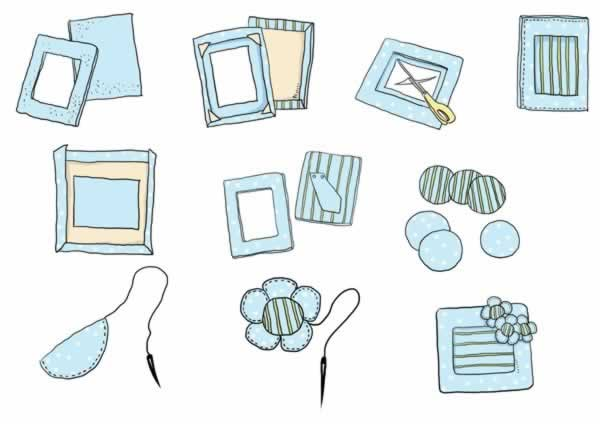
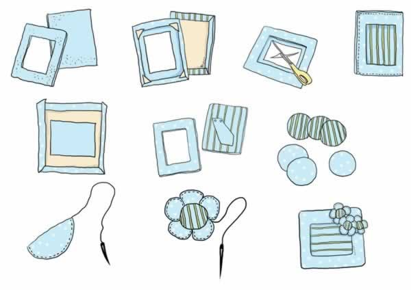

准妈妈给宝宝做漂亮的布相框
准妈妈在宝宝出生后会拍很多照片，买的相框大多是塑料或金属制作的，准妈妈不妨试着DIY做个温暖有爱的布艺相框，用自己做的漂亮相框展示宝宝的照片。手巧的准妈妈还可以发挥创意，让相框个性十足，不但自己看着喜欢，胎宝宝也能体验到手工带来的欢乐。
下面为准妈妈介绍一款漂亮的布相框的做法，希望能给准妈妈和胎宝宝带来更多的乐趣。
需要准备的材料：相框纸样2个（要硬纸板，7寸，内框126*177mm，外框根据自己喜好即可），其中一个中间不挖空，保持完整，做底板用。布料若干块（包相框用的布尺寸要大于相框边缘），辅棉（包裹相框用），铆钉2颗。


1. 在相框和底板上分别涂上胶水，再分别铺上辅棉。
2. 将相框放在选好的布上，布的正面朝外，按照先上下、后左右的顺序将布的边缘用胶水粘在相框上。
3. 内框的布料中心位置开始剪十字线，一直到纸框的内径边缘，先将框内的布料固定在框上，包裹上去，再将外边缘四角做对折，然后四边也折到后面粘好。
4. 另外剪一块做支架的纸板，按相框方法包裹布料，然后用2颗铆钉固定在底板上。
5. 把相框和底板放在一起，缝合3边，留一边放相片。
6．用剩余的布料剪六片圆形布片。
7. 将布片对折，缝弧形的一边，缝完一个接着不断地缝下一个，直到五个缝完，然后拉紧，就像一朵花了，打上结。
8. 将剩下的原片边缘缝一圈，然后拉紧，塞入棉花，缝到花朵上，就成了一朵完整的花了。
9. 将花朵缝在相框上，一个漂亮的相框就完成了。